巴塔哥尼亚十大冬季胜地：GLOBAL旅行者完全指南
从巴里洛切到波多纳塔莱斯，一份完整指南，带你探索巴塔哥尼亚最纯粹的一面：白雪皑皑、静谧幽美、远离夏日人潮。
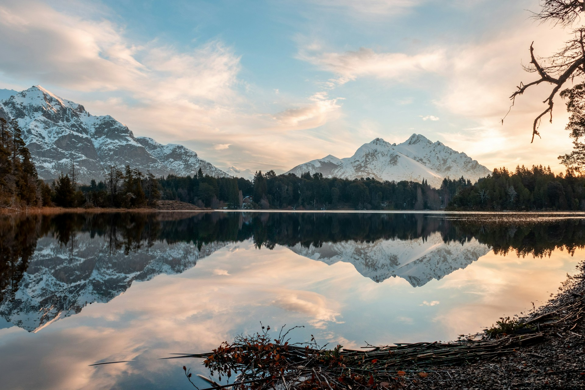
每年六月至九月，当整片大地银装素裹，巴塔哥尼亚便化身为雪地爱好者和荒野探险者梦寐以求的胜地。远离夏日的喧嚣，冬季的巴塔哥尼亚如明信片般美丽：天空湛蓝，与当地文化的连结也格外深沉。本指南精选十大核心目的地，以其冬日之美与丰富活动为依据，帮助国际旅行者了解这里的期待、玩法，以及如何将巴塔哥尼亚之旅发挥到极致。
横跨两国的旅程
巴塔哥尼亚由阿根廷与智利共同拥有，是一片充满对比的辽阔土地。国际旅行者通常经由以下主要机场入境：阿根廷的圣卡洛斯-德巴里洛切（BRC）、卡拉法特（FTE）——后者是前往冰川的门户；智利则有蓬塔阿雷纳斯（PUQ）和蒙特港（PMC）。强烈建议租用4×4越野车行驶山间道路、国家40号公路及南方大道；冬季必须随车携带防滑链，并随时查询路况。各城市之间距离适宜，可串联成环线游：从巴里洛切出发，沿七湖之路（约190公里）可轻松抵达比利亚拉昂戈斯图拉和圣马丁德洛斯安第斯。
🧳 冬季旅行者实用建议
聪明打包
穿着的关键在于层次搭配：保暖内衣（第一层）、羊毛或抓绒中层（第二层）、防风防水外套（第三层）。必备单品：帽子、手套、太阳镜和防水登山鞋。
提前预订
冬季旅游热度持续上升。前往卡拉法特或百内国家公园等热门目的地，建议提前数月预订住宿和游览项目。
旅行保险
必不可少：一份涵盖山地运动及因恶劣天气取消行程的旅行保险。
多变气候
做好应对气温骤变和强风的准备，尤其是在草原地带。随时可能降雪。
1. 圣卡洛斯-德巴里洛切 — 雪都之城
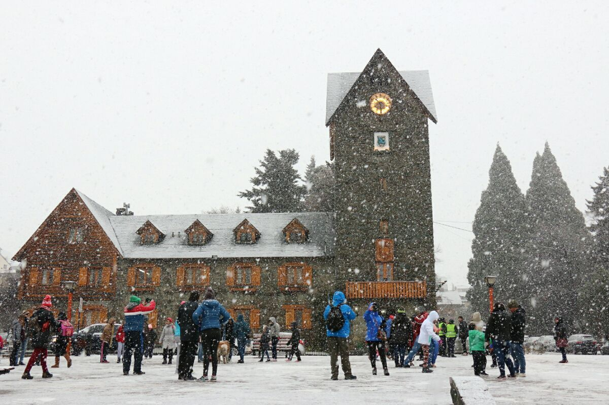

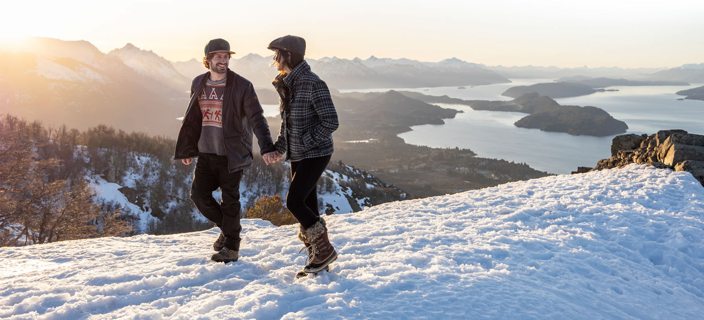
巴里洛切位于安第斯巴塔哥尼亚腹地，依偎在纳韦尔瓦皮湖畔，是首屈一指的冬季目的地。阿尔卑斯风情的市民中心与巧克力店林立的米特雷大街，是开启冬日探险的完美起点。
⛷️ 必玩活动
在大教堂山（Cerro Catedral）滑雪或单板滑雪——这里是南美最大的滑雪胜地，适合各种水平的滑雪者。家庭游客可前往皮耶德拉斯布兰卡斯雪地公园体验雪橇和雪地冲浪管。另一选择：乘缆车登上奥托山（Cerro Otto），俯瞰冰雪覆盖的湖泊与山脉全景。
🍽️ 美食
巴塔哥尼亚羊肉和烟熏湖鳟是当地招牌菜。巴里洛切以其巧克力之路和精酿啤酒文化享誉一方。

不可错过：在布斯蒂略大道的茶馆享用配司康的下午茶。
🥾 徒步路线
环绕湖岸的小环线（Circuito Chico）是经典路线，可驾车或骑行，途经钟形山（Cerro Campanario）观景台。若想更加私密，前往黑泻湖（Laguna Negra）的步道提供绝美雪景。
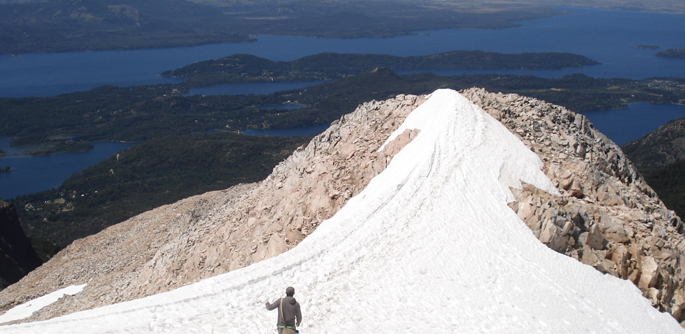
2. 卡拉法特 — 冰川之门
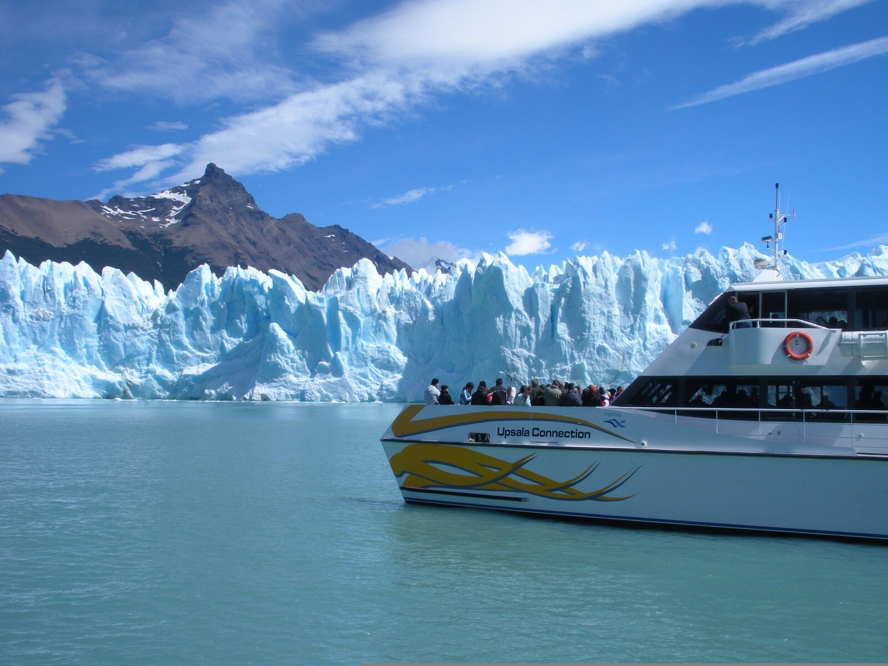
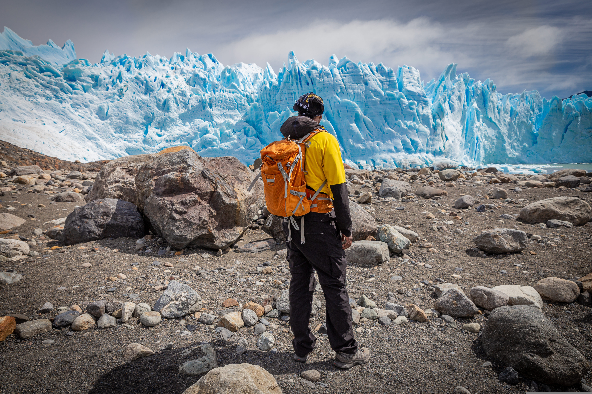
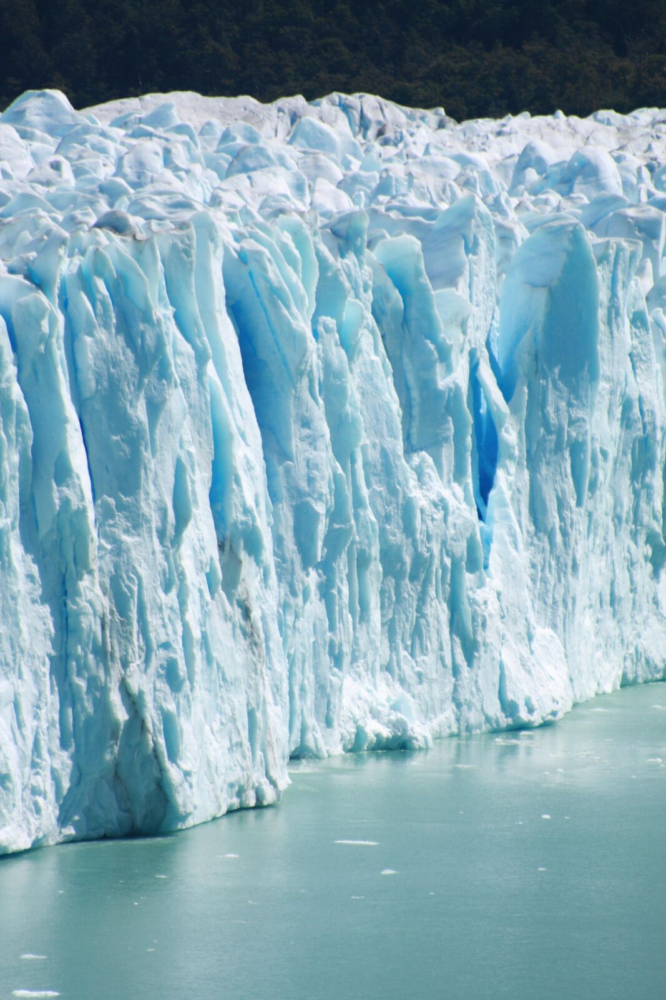
卡拉法特坐落在阿根廷湖畔，是前往世界自然奇观之一——佩里托莫雷诺冰川的出发地。冬季，这段体验更加神奇：巍峨的冰体被白雪山峦环抱，游客也远比夏季稀少。
⛷️ 必玩活动
参观佩里托莫雷诺冰川栈道是必做之事。也可穿戴冰爪在冰川上进行迷你冰川徒步（需有良好体能并提前预订）。强烈推荐：乘船游览阿根廷湖，近距离欣赏乌普萨拉冰川和斯佩加齐尼冰川。
🍽️ 美食
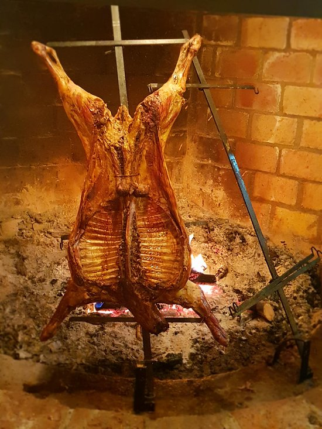
十字架式烤羊（asador a la cruz）是当地王牌菜肴，也是一种文化体验。此外还可品尝原驼肉或鹿肉，以及以城市同名浆果酿制的卡拉法特利口酒。
🥾 徒步路线
佩里托莫雷诺栈道徒步路线易于通行，视野层次分明，景色震撼。想要轻松游览，可前往尼梅斯泻湖自然保护区——这片湿地是观赏火烈鸟和野鸭的理想之地。
3. 乌斯怀亚 — 世界尽头
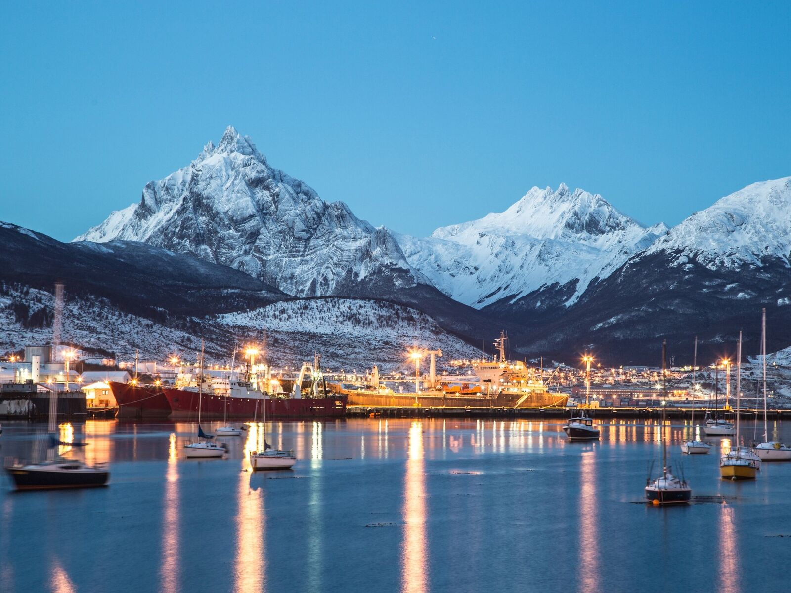
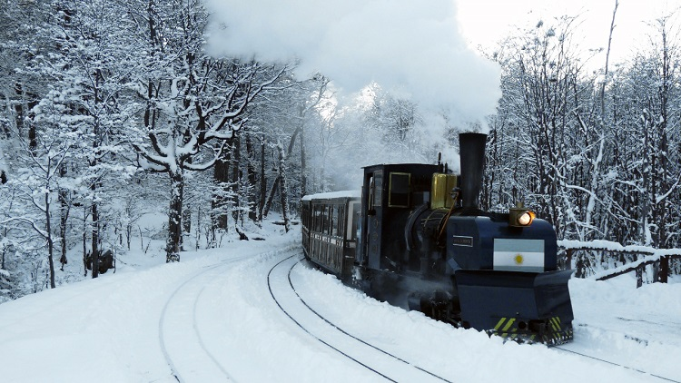


乌斯怀亚是全球最南端的城市，是独一无二、不可复制的目的地。冬季，比格尔海峡、火地岛森林和安第斯山脉银装素裹，在世界尽头上演无与伦比的自然奇景。
⛷️ 必玩活动
在卡斯托尔山（Cerro Castor）滑雪——这是全球最南端的滑雪场，雪季有保障且时间较长。乘船游览比格尔海峡，可观赏海狮及标志性的莱克莱尔灯塔（Faro Les Eclaireurs）。火地岛国家公园提供雪地步道与独特的火地岛森林体验。
🍽️ 美食
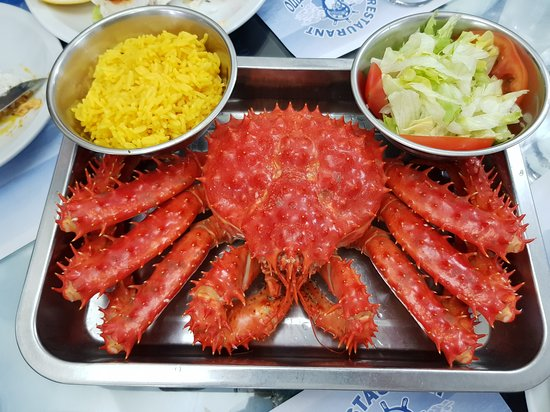
帝王蟹（centolla）和串烤火地岛羊肉是最具代表性的菜肴。离开前别忘了品尝黑鳕鱼，以及用树莓、卡拉法特浆果和野草莓制成的甜点。
🥾 徒步路线
国家公园内，"岛屿漫步"和"海岸小径"提供轻松徒步，可俯瞰海峡。寻求更多挑战，攀登马沙尔冰川（Glaciar Martial）将是一段难忘的经历。
4. 圣马丁德洛斯安第斯 — 阿尔卑斯风情的安第斯美景


这座风景如画的小城傍拉卡尔湖而建，以山地建筑风格和宁静氛围著称。冬日里，白雪将这片土地装点成阿尔卑斯风情明信片，查佩尔科山（Cerro Chapelco）是当季明星景点，远处兰宁火山白雪皑皑。
⛷️ 必玩活动
在查佩尔科山滑雪和单板滑雪，各难度雪道齐全，可滑面积超过国内许多滑雪场。也可在拉宁国家公园的森林中穿戴雪地鞋徒步探行。
🍽️ 美食

中欧风味菜肴是冬季经典：壁炉旁，一杯精酿啤酒搭配配司包子（goulash mit Spaetzle）（自制蛋面）和扁豆炖菜，暖意浓浓。
🥾 徒步路线
班杜里亚斯瞭望台步道（Mirador Bandurrias）可俯瞰城市与湖泊全景。湖滨步道适合各年龄层漫步。冬日的七湖之路更如明信片般迷人。
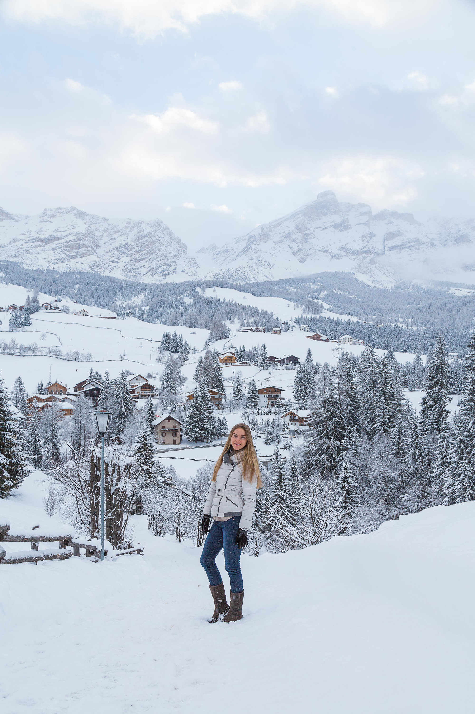
5. 比利亚拉昂戈斯图拉 — 巴塔哥尼亚的花园
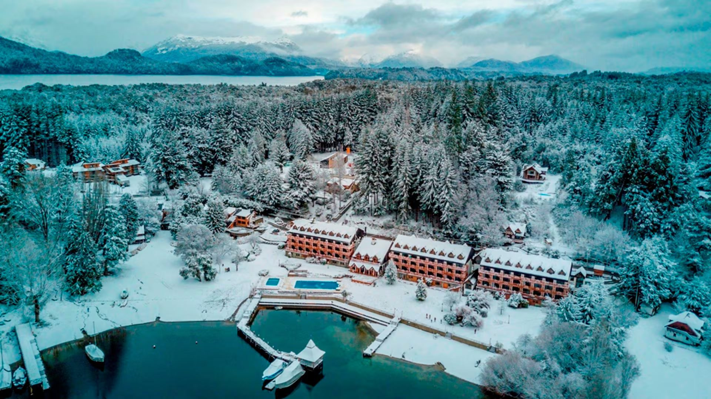
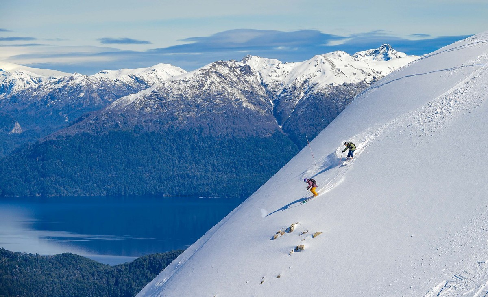
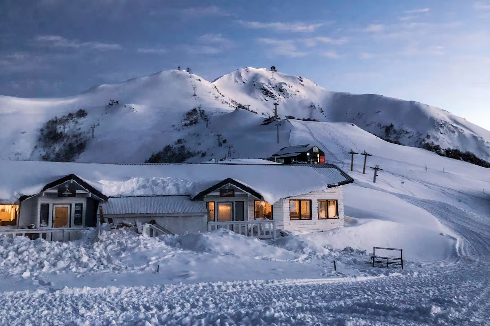
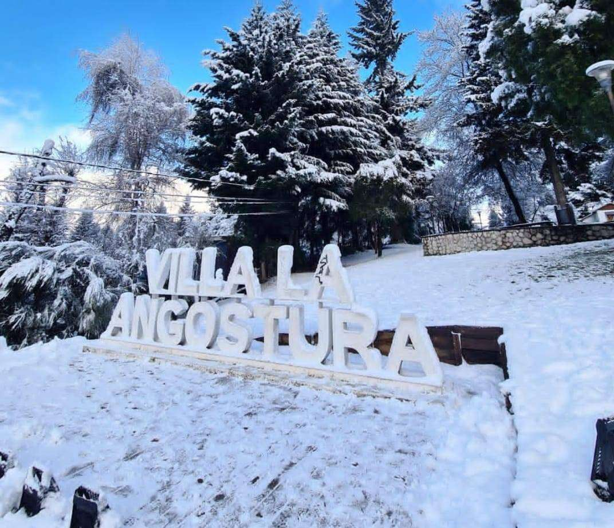
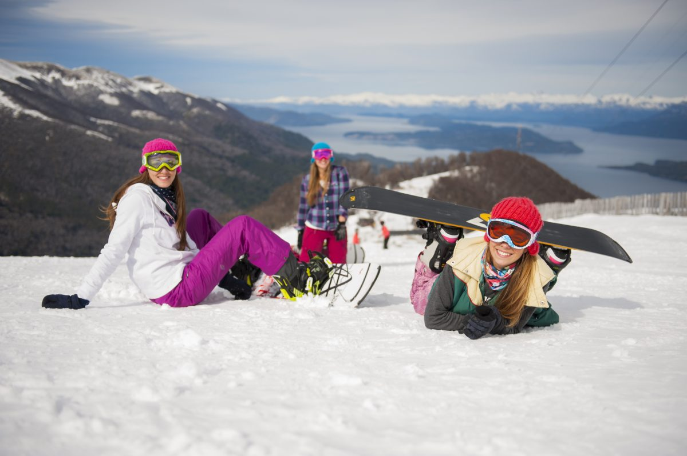
被誉为"巴塔哥尼亚的花园"，这座依偎在纳韦尔瓦皮湖畔的小镇宁静怡人，自然之美亲密而私密。对于不想置身于人潮中、又不愿放弃优质雪况和巴塔哥尼亚风光的旅行者，这里是理想之选。
⛷️ 必玩活动
在贝尤山（Cerro Bayo）滑雪——这是一个精品滑雪场，雪道难度多样，可俯瞰纳韦尔瓦皮湖的绝美景色。也可在阿拉彦斯国家公园的阿拉彦桃金娘林和南极假山毛榉林中穿戴雪地鞋徒步。
🍽️ 美食


冬季菜单以炖菜、羊肉、鳟鱼和精酿啤酒为主。多家茶馆提供家制蛋糕和手工果酱，是避寒的温馨去处。
🥾 徒步路线
贝尔维德雷瞭望台步道（Mirador Belvedere）路程不长但坡度较陡，景色壮观。若想轻松游览，科伦托索湖上的岛屿步道易于通行且极具拍照价值。
6. 埃斯克尔 — 历史、白雪与世界尽头列车


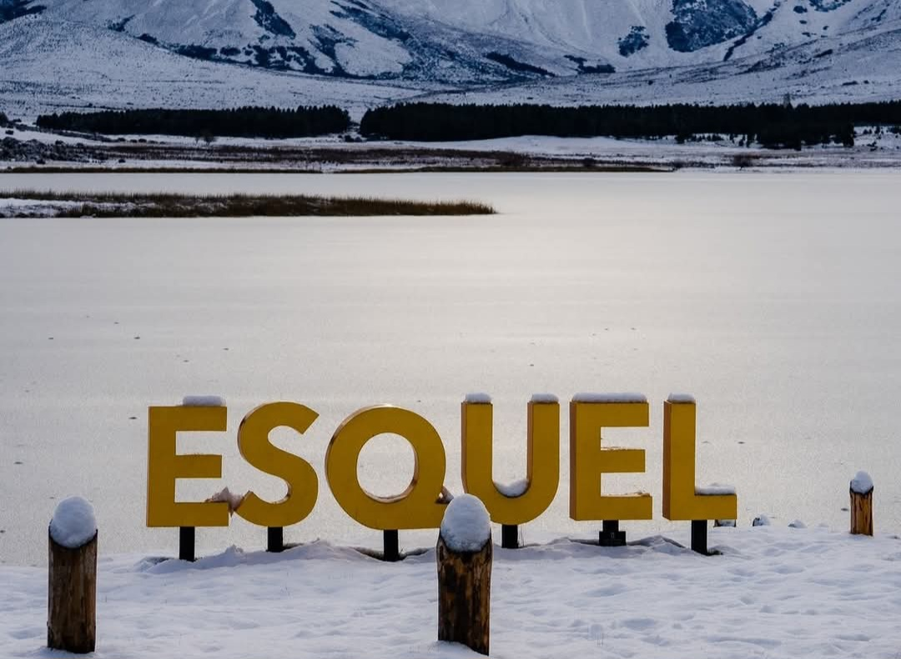
埃斯克尔位于丘布特山脉脚下，以其滑雪场拉奥亚（La Hoya）闻名——后者因雪质如粉而被称为"云中之山"。埃斯克尔同时也是一座充满威尔士历史底蕴的小镇，拥有一列穿越草原的传奇列车。
⛷️ 必玩活动
在拉奥亚滑雪，以高品质粉雪和不拥挤的氛围著称。必乘体验：特罗奇塔（La Trochita）老巴塔哥尼亚快车——一列穿越草原和森林的蒸汽火车，仿佛置身19世纪。
🍽️ 美食
巴塔哥尼亚羊肉、河鳟，以及邻近特雷林镇的威尔士烘焙糕点：黑蛋糕、家制面包和正宗威尔士茶，是一段不可错过的文化体验。
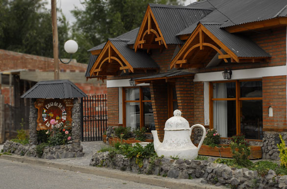

🥾 徒步路线
阿莱塞斯国家公园（Los Alerces）距此仅50公里，提供伊里戈延瀑布等步道，冬季可穿行于千年雪中阿莱塞（落叶松）之间。
7. 巴拉斯港（智利） — 火山、湖泊与德式风情美食


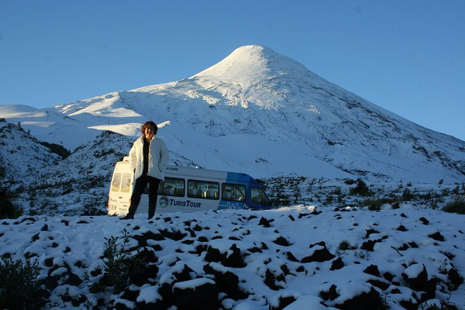
巴拉斯港（Puerto Varas）依利亚尼基韦湖而建，以德式建筑风格和倒映于湖面的锥形奥索尔诺火山著称。冬日里，白雪覆盖的火山景观宛如电影画面。
⛷️ 必玩活动
游览托多斯洛斯桑托斯湖（Lago Todos los Santos）前往佩亚，沿途被白雪火山环绕。参观佩特罗韦瀑布（Saltos del Petrohué）——瓦尔迪维亚雨林中的碧蓝色瀑布。以及在奥索尔诺火山滑雪中心体验滑雪。
🍽️ 美食
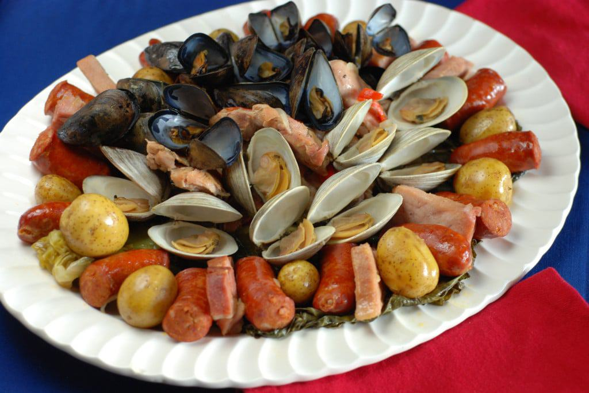
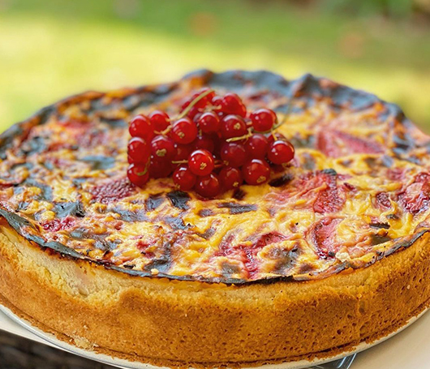
深受德国移民影响：库欣（Kuchen）（水果蛋糕）、斯特鲁德尔和精酿啤酒，与用热石头在地下烹制的传统智利库兰托（curanto）共存于同一张菜单。
🥾 徒步路线
奥索尔诺火山步道直达白雪覆盖的火山锥底部，可俯瞰湖泊和安第斯山脉。也可在比森特·佩雷斯·罗萨莱斯国家公园（Vicente Pérez Rosales）——智利最古老的国家公园——内徒步探行。
8. 查尔坦 — 冬季徒步之都
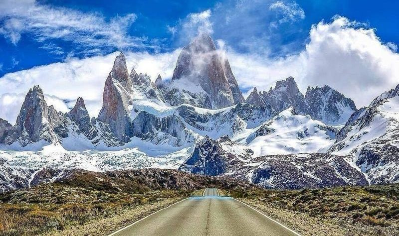

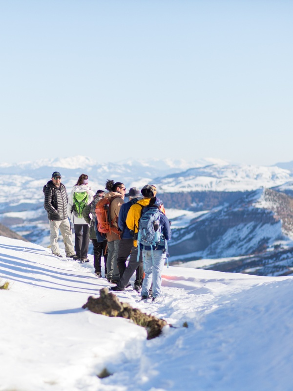
尽管以夏季步道闻名，查尔坦依偎在雄伟的菲茨罗伊山脚下，冬季提供别具一格的体验：近乎完全的孤独、深厚的积雪，以及巴塔哥尼亚最壮观的地貌在白雪中的呈现。
⛷️ 必玩活动
穿戴雪地鞋徒步或越野滑雪，沿前往三湖（Laguna de los Tres）等步道探行（须确认路况并配备当地向导）。观察野生动物：冬季常见秃鹫、巴塔哥尼亚狐狸和原驼。
🍽️ 美食
炖汤和肉烩补充体力，巴塔哥尼亚烤羊肉，以及数家精酿啤酒厂——每次徒步归来的必去聚集地。
🥾 徒步路线
乔里略瀑布步道（Chorrillo del Salto）是冬季短途徒步的理想选择。对于经验丰富的探险者，菲茨罗伊步道需要持证向导和高山装备。
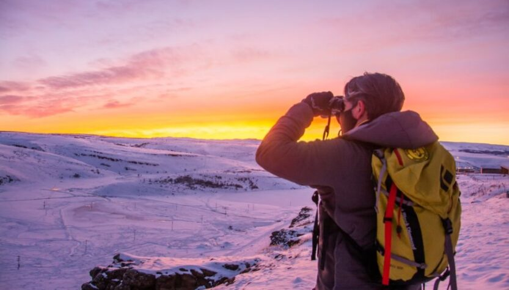
9. 科哈伊克（智利） — 深邃巴塔哥尼亚的心脏
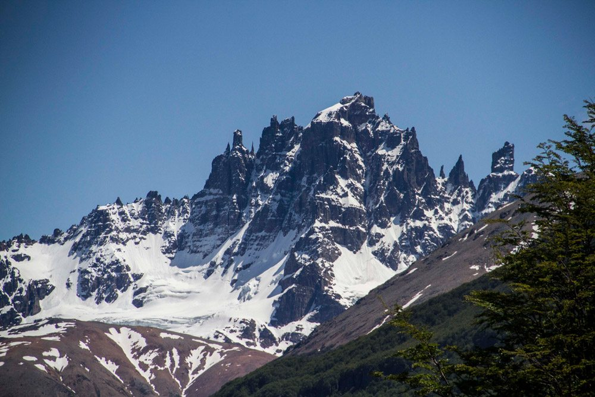

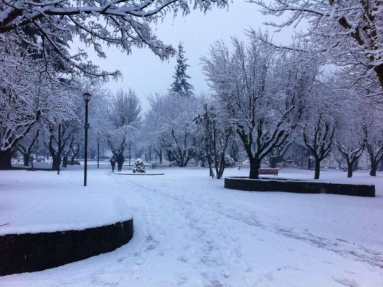
科哈伊克（Coyhaique）是艾森大区的首府，是进入南方大道（Carretera Austral）及其荒野风光的门户。冬季，与世隔绝的氛围和皑皑白雪赋予这里特殊气质：这是南美洲最深邃、最少人踏足的巴塔哥尼亚。
⛷️ 必玩活动
探索科哈伊克国家保护区，步道可俯瞰城市与白雪山峦全景。沿南方大道南行，抵达赫尼拉尔卡雷拉湖（Lago General Carrera）的大理石教堂——这是全球最壮观的地质奇观之一。
🍽️ 美食
以草场放养的羊肉、牛肉和猪肉为主，搭配当日从艾森河流湖泊捞取的鲜鱼。科哈伊克的精酿啤酒在全国享有越来越高的声誉。
🥾 徒步路线
城市附近的印第安石步道（Piedra del Indio）——一处壮观的岩石造型，冬季可通行。国家保护区内有穿越雪中南极假山毛榉和科伊韦树的路线，适合探险者。
10. 波多纳塔莱斯（智利） — 百内国家公园之门


波多纳塔莱斯（Puerto Natales）是前往百内国家公园的后勤中心，这里是全球最具代表性的目的地之一。冬季，公园化为近乎专属的领地：全白的景色、孤独的原驼，以及独占巴塔哥尼亚天地的奇妙感受。
⛷️ 必玩活动
在国家公园全日游中徒步前往塔峰基地（Base de las Torres）（视路况和配备向导），或乘车游览公园，观赏原驼、狐狸和秃鹫。乘船游览格雷湖（Lago Grey），近距离欣赏冰川与蓝色浮冰。必访景点：米洛顿洞穴（Cueva del Milodón）。
🍽️ 美食
巴塔哥尼亚烤全羊或串烤羊肉，最后希望海峡的海鲜，以及当地精酿啤酒。波多纳塔莱斯市中心有数家品质不错的餐厅。
🥾 徒步路线
塔峰基地步道是最著名的路线（难度较高）。对于难度较低的选择，苦泻湖步道（Laguna Amarga）可欣赏百内山体的秀美景色，体力要求相对较低。
冬季的巴塔哥尼亚，是为追求与自然深度连结和真实冒险的人而存在的地方。这十座城市各自提供独一无二的体验，从世界级滑雪到冰川的静寂孤独，一应俱全。严寒是这片风景的组成部分，而敢于拥抱寒冷的人，将发现一个截然不同的巴塔哥尼亚：更加亲密、更加纯粹，也更加巴塔哥尼亚。